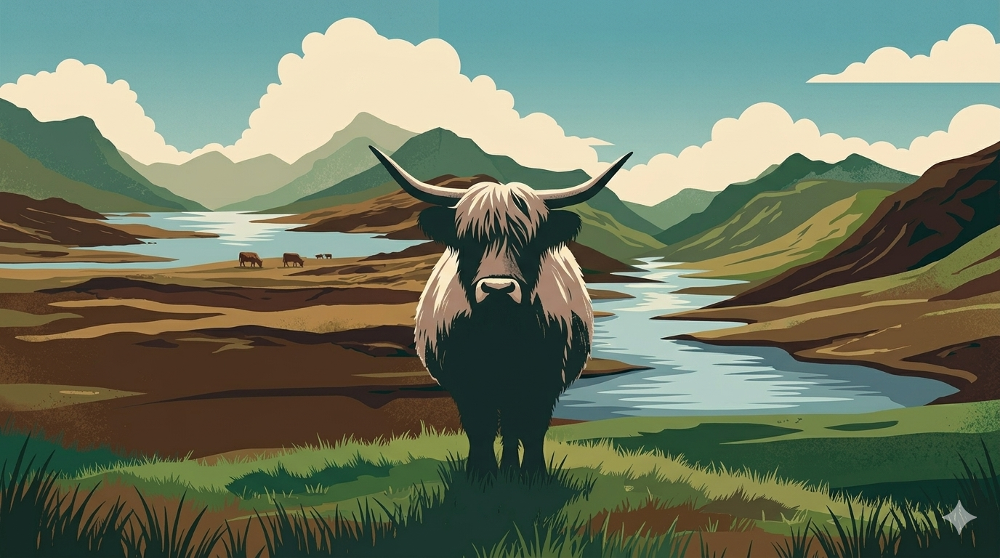

WELCOME TO THE HIGHLAND COW TOURNAMENT
ABOUT
The modern image of clans, each with their own tartan and specific land, was promulgated by the Scottish author Sir Walter Scott after influence by others. Historically, tartan designs were associated with Lowland and Highland districts whose weavers tended to produce cloth patterns favoured in those districts. By process of social evolution, it followed that the clans/families prominent in a particular district would wear the tartan of that district, and it was but a short step for that community to become identified by it.
Many clans have their own clan chief; those that do not are known as armigerous clans. Clans generally identify with geographical areas originally controlled by their founders, sometimes with an ancestral castle and clan gatherings, which form a regular part of the social scene. The most notable clan event of recent times was The Gathering 2009 in Edinburgh, which attracted at least 47,000 participants from around the world.
It is a common misconception that every person who bears a clan's name is a lineal descendant of the chiefs. Many clansmen, although not related to the chief, took the chief's surname as their own either to show solidarity or to obtain basic protection or for much needed sustenance. Most of the followers of the clan were tenants, who supplied labour to the clan leaders.